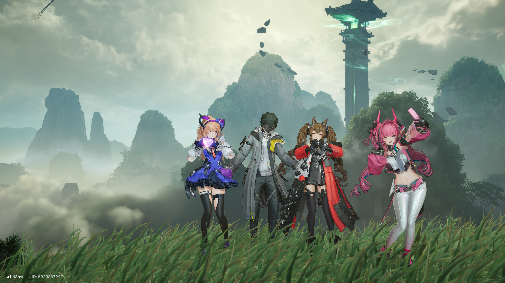
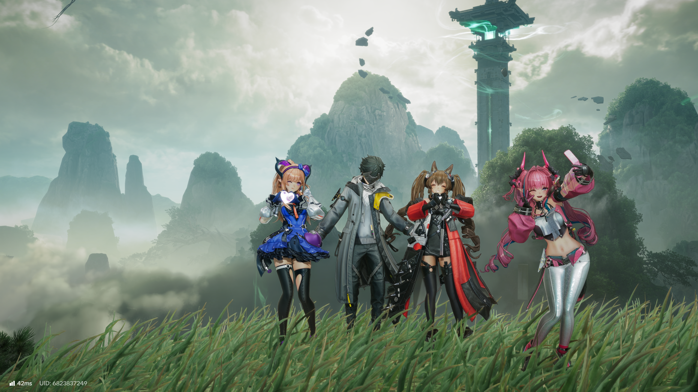

ARKNIGHTS ENDFIELD / DLSS 5 NEURAL RENDERING
See the difference.
Explore the supplied gameplay captures. Drag the divider, switch between off and on, or compare NR styles and presets.


NR ONNR OFFOutdoor scene - 50% NR onFull-size off / Full-size on
Separate captures, not synchronized frames. Character poses, camera position, UI, and scene lighting can differ. Interior styles and presets in particular are not pixel-aligned. Images retain their original 2560 x 1440 pixels in lossless WebP format.